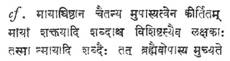

REVIEWS
Gandhi: A Life by
The
Gandhi centenary year (1968-1969) has been marked by a number of useful
publications dealing with the Mahatma’s life, philosophy and achievements.
Krishna Kripalani, whose biography of Gurudev Tagore earned for him just and wide appreciation, has come out with a book on Gandhiji. This is
a valuable addition to the number.
It
is a source of agreeable surprise that a short volume of nearly two hundred
pages could hold us so absorbed in the well known incidents of Gandhiji’s life,
unless it be the delightful art of a writer has made
it something of a fresh substance in the presentation of it. For a biography of
this kind which has had the advantage of a growing literature already in
existence of the hero’s life and activities, the effort may have been
comparatively less exacting of labour in collecting
materials than otherwise would have been the case, if for the first time it
were to be written. But yet the condensation of an eventfully great career as Mahatmaji’s, without forgetting any of the focal points of
his inner strivings and spiritual victories explained, is itself a claim for
its real merit.
It
will be a mistake, as some have viewed the book, that the
intention of presenting a short volume is for the purpose mainly of its use by
educational institutions. On the other hand, the effective narration and
sensitive prose of Sri Kripalani make for intense
literary enjoyment worthy of maturer minds than of
undergraduates. It is also often revealing of the genuine art of the writer
when chapters bear titles remarkably appropriate to their contents.
One
cannot afford to forget, on closing the book. The last chapters
of the book which have pinpointed the unique saintliness of a character which
had an intuition of forthcoming events and an unusual preparedness to meet them
with the equanimity of a Jivan Mukta. The highest level of philosophical
attunement to life depends, according to our time-honoured
traditions, on an able maintenance of equilibrium of experience between
opposites like joy and sorrow, gain and loss, victory and defeat. Gandhi, the
man, became the superman by living the life and facing the death in the manner
in which he had earlier envisaged them both to happen to him in God’s own
universe.
–K. CHANDRASEKHARAN.
Political and National
Life and Affairs by
M. K. Gandhi.
Compiled and edited by V. B. Kher. Vols.
I and II. Published by Navajivan Publishing House, Ahmedabad
- 14. Price Rs. 6 each.
These
two valuable volumes are compilations of extracts from Gandhiji’s writings,
related to political and national life affairs; originally published mostly in
the Young India and the Harijan. In his introduction Sri V. B. Kher rebuts some charges levelled
against Gandhiji by Sri Sasidhar Sinha.
According to the latter, Gandhiji “scared the Muslims and led them to conclude
that in a free
The
first volume contains several sections
dealing with many important topics–Politics, Organic Swaraj, Constitutional Swaraj,
etc., which have a relevance to our times, and Gandhiji’s opinions expressed
thereon are worth studying. For the Mahatma “there are no politics without
religion” and the religion means the “universal religion of toleration” a “belief
in ordered moral Government of the universe.” “Politics bereft of religion are
absolute dirt, ever to be shunned.”
Gandhiji’s
“Ideal of Indian states is that of Ramarajya.” Regarding
real socialism Gandhiji has the following words to say, “All land belongs to Gopal (that is, State, that is, the people). Where then is
the boundary line? Man is the maker of that line and he can therefore unmake
it.” According to Gandhiji the restoration of free speech, free association and
free .press is almost the whole Swaraj.
Tolerance,
Discipline, Linguistic Integration, Hindu Muslim Unity, and Inter-caste Unity
are some of the important subjects dealt with in the second volume.
Mahatma’s
warning is worth heeding to: “I warn the correspondents against segregating
the Dravidian South from the Aryan North. The
On
inter-caste marriages Gandhiji says, “The fact is that intermarriage and
inter-dining are not necessary factors in friendship and unity though they are
often emblems thereof.” Pages 235 to 237 contain some suggestions of Gandhiji
for the unity, and we shall do well to remember them. Every Indian who desires
his country to prosper on right lines in all planes cannot ignore the writings
of the Mahatma, and these two volumes are no exception to this.
–B. KUTUMBA RAO
The Mind of Mahatma Gandhi compiled and edited by
R. K. Prabhu and U. R. Rao. Published
by Navajivan Publishing House, Ahmedabad-l4.
Price Rs. 12-00
Mahatma
Gandhi is a citizen of the world and he belongs to all climes and times. His
thoughts breathe in themselves the lofty spirit of the Upanishads and the
intuitive sayings of the sages, and have a universal appeal. As such they
deserve to be preserved and bequeathed to posterity for reference and guidance.
Messrs R. K. Prabhu and U. R. Rao richly deserve our
gratitude for having collected and presented in one volume the gems of Mahatma’s
thoughts arranged subjectwise.
The
book is divided into fifteen chapters under different titles such as Truth,
Fearlessness, Faith, Non-violence; Satyagraha, Sarvodaya,
Labour, Trusteeship, Brahmacharya, Freedom and
democracy etc. Appendices at the end of the book contain the names of the
source books, Source References, Chronology, Glossary and Index of the
subjects, and facilitate ready reference.
Mahatma’s
advice to students is found in the following words: “Agitation is only for
those who have completed their studies. While studying, the only occupation of
students must be to increase their knowledge...The students should be, above
all, humble and correct.”
Gandhiji
has a piece of advice to the people in democracy and this is worth heeding to: “Democracy
disciplined and enlightened is the finest thing in the world. A democracy
prejudiced, ignorant, superstitious, will land itself in chaos and may be
self-destroyed....A born democrat is a born disciplinarian. Democracy comes
naturally to him who is habituated normally to yield willing obedience to all
laws, human and divine...A democrat must be utterly self-less.
He must think and dream not in terms of self or party but only of democracy.”
As
regards creation of ministries Gandhiji felt that it would be decidedly wrong
to create ministerships for the sake of conciliating
interests. While reading all these, one wonders whether we are not bidding
good-bye to Gandhi and Gandhism and heading to a crisis-political, social,
economic and spiritual as well. We heartily commend this book to all those who
are interested in an ideal welfare State.
–B. KUTUMBA RAO
Gandhi in Indian
Politics by
Nirmal Kumar Bose and P. H. Patwardhan. Published
by Lalwani Publishing House,
Political and National
Life and Affairs Vol. III by M. K. Gandhi. Compiled and edited by V. B. Kher. Published by Navajivan
Publishing House, Ahmedabad. Price: Rs. 6.
Mahatma Gandhi by M. D. Japeth. Published by Pearl Books,
The
Gandhi centenary year is naturally a witness to an unusual proliferation of
books on Gandhiana. They are of different kinds, and
meant for diverse purposes. But the book, Gandhi in Indian Politics, consisting of lectures by Prof. N. K.
Bose and the late P. H. Patwardhan is a valuable
exposition of the Gandhian teaching, and is of
enduring interest for a number of reasons. Both the authors are basically non-confirmist in their outlook. And they have treated the
contribution of Mahatma Gandhi in an unconventional manner that is much more
relevant in the contemporary scene.
As
Professor N. K. Bose says in the beginning, he is not an orthodox Gandhian. Nor is he, if one may add,
an official Gandhian. In his own words, Prof. Bose is
a “Protestant Gandhian.” He is much more, as the
illuminating lecture on “Gandhi, the Man” reveals. His presentation of Gandhi
has that rare authentic touch. Prof. Bose is a distinguished social scientist
who has done pioneering work. He had made a very close study of Gandhi’s
writings since the beginning. During the fateful years of Gandhi’s ‘Last Phase’,
Prof. Bose was closer to him than anyone else. He acted as Gandhi’s secretary
in his Noakhali tour.
His
account of Gandhi brings out vividly the rare characteristics of his great
personality. It is also notable for giving us the less-khown
details of that stormy period in Indian politics on the eve of
If
Prof. Bose treats the Gandhian theme with an
unmistakable warmth and intimate involvement, the late Rao Saheb
Patwardhan gives us a revealing analysis of Gandhi’s
ideas and their relevance in the present context. His lecture on Gandhi “The
Rebel and the Prophet” recovers the unique image of Gandhi, especially to the young
generation in
There
is a critical survey of the Gandhian influence today
in Patwardhan’s address on “The Impact on Posterity.”
The conflict between Gandhi and his critics is discussed with a historical
insight. The role of the Constructive Programme was also analysed
discerningly by the author. The tragedy of Gandhi, to which Prof. Bose made an
extensive reference earlier in the book, was further revealed by Patwardhan in his concluding lectures. Gandhi in Indian Politics
is as stimulating a study of Gandhism, as it is altogether worth-while.
V.
B: Kher’s volume of Gandhi’s Speeches and Writings is
an addition to the numerous anthologies of Gandhi. The collection is made from
all the available sources of Gandhi’s material. This book would have been more
valuable if the selection and the presentation of Gandhi’s thoughts was made
on any viable method. As it is, the reader is open to a heterogeneous
collection in this book. Gandhi’s explanatory note on the question of inconsistency, implying something of a historical approach, (p. 2) has
little use here as it is not followed in any way by the editor. Political
and National Life and Affairs, comprising
of Gandhi’s pieces over the
years, is an interesting collection of his thoughts, but it is hardly a key to
the more difficult understanding of Gandhi’s “thinking”.
M.
D. Japeth’s Mahatma Gandhi is meant for a specific audience. We do not
have many good books for the
youth which are also successful. Japeth’s book, aptly illustrated, is interesting and
instructive as well.
–V. V. RAMANA MURTI
Out of Dust by D. F. Karaka. Revised
edition, 1968. Thacker and Co., Ltd.,
The
birth centenary of Gandhi is the most appropriate occasion for revising an old biography
of the Mahatma. The revision is further justified because “Out of Dust”, which
was first published in 1940, gradually went out of print, although it was
issued in successive new impressions for
some years.
The
revision, however, is not as comprehensive and rounded as one would have
expected. “But”, pleads Karaka in the Epilogue (which is the only substantial
addition to the original book),” as I read through chapter after chapter of my
own book, I began to feel that I was not the same person now as the younger,
more sensitive author of twenty-eight years ago...this respect (for the
Mahatma) could not be conveyed in the same sentimental language which I had
earlier used.”
This
apology and explanation notwithstanding, one should have expected at least a
kaleidoscopic survey of some post-l940 events such as the Quit India movement
of 1942 and the hectic political parleys with the Cabinet Mission in which
Gandhi was the political nucleus. To the generation of Indians who were born
after 1947, these events flowing from
even the mellowed pen of Karaka would have been exciting and
enlightening.
The
literature on Gandhi is legion and, to give fresh yet interesting information
on him is, as the author pleads, difficult. However, quite a lot of people read
books not only for the
matter they contain but the manner in which a book is presented. Karaka’s
uncanny power of journalism is enough to commend his books for general reading.
And when the subject is so powerful as Gandhi, the
worth of the book cannot be overestimated.
Not
for nothing was the book prescribed for M. A. final examination in the Indo-Anglian Literature of Jiwaji
University,
–K. V. SATYANARAYANA
Mahatma - My Bapu by Shripad Joshi. Edited and translated into English by M. D. Shahane. Published by Thacker & Co.,
Ltd.,
In
this small book the author narrates his own experiences with Gandhiji. Hence the title. Being a linguist and author of over 100
books in Marathi and Hindi, he has a flair for journalism as is evident from
this book, although it is a translation by another.
Right
from the initial thrill and excitement he experienced on first meeting
Gandhiji, Joshi narrates his relations with his hero lucidly and a note of
sincerity rings throughout.
Some
correspondence that transpired between the author and Gandhi is reproduced and,
as usual, it is a delight to read Gandhiji’s affectionate letters in his
inimitable style.
–K. V. SATYANARAYANA
Culture and Creativity by K. Chandrasekharan. Published by Macmillan &
Co., Ltd., Madras-2. Price Rs. 22-50.
This
is a collection of eleven lectures delivered by the author during 1966-67 as
Tagore Professor of Humanities in the
One
great merit of all these lectures bearing on poetry and literary criticism is
the way the author has illustrated his thesis with appropriate quotations from
Valmiki, Vyasa, Kalidasa, Muka
Kavi, Anandavardhana, Subrahmanya Bharati and other Indian poets, as also, of
course, from Tagore, who is his constant point of reference, and Sri Aurobindo,
whom the author is never tired of quoting. To most Indian students of English
literature in our universities, all this is almost a sealed book. The author
has dealt with the topics in the light of Indian tradition, though for comparison
quotations are given from Western thinkers as well.
The
book ends with a Bibliography and an Index which add its usefulness. The book
deserves to be in the library of every school and college and public library.
–K. SAMPATHGIRI RAO
An Approach to Reality by N. Sri Ram. Theosophical
Publishing House, Madras-20. Price Rs. 6-50.
Here
is an authentic exposition of the approach of Theosophy to the problem of Life
and the Reality. Comprising a number of talks given by the author over a period
of years, the book throws light on many questions like the Ultimate Reality,
the Individual Self, human relationships, relativity of all knowledge gained by
the mind, etc. “Life and Consciousness”, says the writer, “are the counterpart
of matter in a living, evolving, meaningful universe. Spirit and Matter are but
two aspects of existence, of every single thing in the manifested universe.
They constitute two different forces in our natures, a cause of tension and
conflict within ourselves. The unity lies remotely
within.” The solution has got to be comprehensive. “Order in the totality, if
it is to be perfect, must include order in every section of it.”
In
the chapter on Theosophy, a comprehensive synthesis, Sri Sri
Ram notes: “Evolution is endless for there is no limit to the potentiality of
the Spirit which is being increasingly realised in
the forms. Each individual human being and species of life represents a
continuing manifestation of the one Spirit, a manifestation which in other
forms and under other conditions continues even after the death of the physical
body.”
The
key to the synthesis lies within oneself. To become aware of one’s own self
gives a foothold on the Reality. The means for it is a progressive utilisation of one’s
consciousness till the last barrier of
the ego is crossed and the basic Self–of oneself and of all–is realised.
The
writer examines the contribution of modern
science and of the ancient
tradition of the Upanishad
towards this culturing of consciousness.
–M. P. PANDIT
The Gita Govinda of Jayadeva Translated by Monika Varma. Writers’ Workshop, 162/92
A very skilful translation without the loss of the spirit of the
original. In a striking introduction, the translator gives us a few
glimpses into the spiritual significance of
this seemingly sensuous lyrical piece. Her notes on certain
key-expressions guide the reader to the inner sense. While emphasising
on the mystic import of the
poem, Monika Varma does not lose sight of the sheer lyrical beauty and
rhythm and music of the words.
All
the twelve Sargas from samodadamodara
to supriyapitambara
are rendered with felicity. The significance of the name radha and also her being an Avatar of Narayani is revealed. The Gopis
taking part in the Rasalila symbolise
the senses and also the groping souls in search of the Infinite. Radha symbolises the jivatman and Sri Krishna the paramatman; the sakhi who facilitates the reunion of both, symbolises
the Guru who leads the disciple towards light amidst the encircling gloom. The
estrangement or Radha from Krishna, her jealousy, the plight of Krishna, the Sakhi’s
message, Krishna’s request to meet Radha in his
bower, her refusal due to wounded pride, the betrayal of Keshava by not coming to her, the
bewildered state of Krishna
when Radha accuses him, her message to him to come again, the final
reunion and bliss of Radha-Krishna are all dealt with in these Sargas.
The
translator has done well in chosing the poetic form for
her rendering. Her treatment lifts up the poem into a work of mystic art.
–M. P. PANDIT
Whispers Near a
S.
Santhi has fine command over the English language.
His best poems have a forceful simplicity. He has a definite penchant for the
device of repetition and he creates many dramatic effects by a skilful use of
it. One is grateful to Santhi for not seeking, as
many modern poets are apt to do, his inspiration in the depths of his
subconscious and bringing up a lot of filth and ugliness in an attempt to be
original.
Our
poet states his credo with force and sincerity in his poem ‘Flower Child.’ He
rejects all conventions and all decisions not his own. He does not fear heaven
or hell. He loves life. He loves purity. He loves experiencing. He hates all
that is mean and petty and cruel and in his poems he repudiates the hell that
modern man has made of his life. “I refuse to accept the world I never made.” “This
world is peopled with futile men leading futile lives until the Yama-Bird comes with “the death-warrant.” Not
even, love triumphs in this world unless it has “the right address.”
It
is nothing new that Santhi says in his poems but he
says it all so gaily and so wittily and again so vividly and so passionately.
He fulfils the function of the true poet by making us awaken once more to the
truths that have lost their force for us through familiarity. He jolts us out
of our complacency and dullness.
Special
mention must be made of the poem Nachiketas.
In this poem he has achieved a high order of dramatic poetry. He has
carefully preserved the austere atmosphere of the original and yet he has
created something new. The poem is not a translation but truly a ‘transcreation.’
–M. P. PANDIT
Creations and Transcreations by P. Lal. Price: Rs.
2-00.
The Mahabharata Translated by P. Lal.
Writers’ Workshop,
In
his book of poems, Mr. Lal has brought into juxtaposition poems which do not harmonise with each other. The Mahabharata ought to stand
alone as it does in the other volume which deals with the Pauloma
Parva. The first 92 verses of the Epic which are
included in the ‘Creations and Transcreations’ do not
lend themselves much to transcreation. A list of names,
a recital of things created in a certain order, one can but translate. Only
here and there the poem soars
as in Sauti’s description of the holy sages: “Who
shines in this place of sacrifice/With the shine of
the sun.”
The
creations has a different atmosphere, mostly
vital. Sesha-Naga in Dum
Dum is particularly so. The name Sesha-Naga acquires in its repetition the force of a Mantric type which hypnotizes the reader as surely as the
snake hypnotizes the unfortunate bride on her wedding night. Simple and
dramatic, this poem is an achievement of considerable order. After the Three
Poems, we have his translations of selections from the Subhashita-ratna-kosa
of Vidyakara. These are little gems of verses and
Mr. Lal is at his best here.
The
Mahabharata contains
his translation of the Pauloma Parva
in the Adi Parva. Setting
the high note in his Preface, Mr. Lal dramatises the
situation of the passionate appeal of Puloman the Raikshasa and the piteous lament of Ruru
for his beloved Pramadvasi. We must observe that the
script-writing interferes with the flow of reading.
Whether
he writes original poems or translates, Mr. Lal compels attention.
–M. P. PANDIT
The Wisdom of Unity (Maneesha Panchakam) of Sri Sankaracharya by T. M. P. Mahadevan. Ganesh & Co. Private Limited,
Madras-17. Pages 48. Price: Rs.
3-00
Adi Sankara, walking across the
banks of the Ganga at
This
is the eleventh publication in the Sankara Jayanti Series. Dr. Mahadevan’s
style is eminently readable and even those not well versed with abstract
philosophy can follow and understand the logic of Advaita as described here.
–T. C. A. RAMANUJAM
Collected Works by Sri Krishnaswami Iyer. Adhyatma Prakasha Karyalaya,
Holinarsipur,
Mr.
Krishnaswami Iyer has already placed the students of
Advaita Vedanta under a deep debt of gratitude by his book Vedanta or
the Science of Reality, recently republished. The present volume is the
collection of several of his articles written from time to time to different
journals. Smt. S. Saraswati has collected them here.
There are as many as fourteen articles in this collection and most of them are
reprints. Sri Krishnaswami Iyer’s study of Advaita
Vedanta has a distinct approval. He is one of those that have stressed the
rational element in the philosophy of Sankara to the
utmost. His analysis of the three states of man’s consciousness, the working,
the deep sleeps and dream states is remarkable. Section three
gives us the Fundamentals of Vedanta, section eight examines the view whether
Sankara was a crypto Buddhist, and
section ten gives us a short account of Ramanuja and Madhva. The last section is an account of the great
musician the late Tiger Varadachari. The printing of
the book could have been better.
–DR. P. NAGARAJA RAO
Changing Phases of
Buddhist Thought by
Dr. Anilkumar Sarkar. Bharati
Bhavan, Patna-1. Price: 15.
Dr.
Sarkar’s volume has grown from his many papers on the
subject. He has presented in an organic way the development of Buddhist Logic
as disclosed in the four schools, the Vaibhasika
and the Sautrantika and Yogachara and the Madhyamika.
He has given a clear account of their modes of reflection and disciplines.
Besides this he has given us accounts of the contribution to Buddhist Logic by
eminent thinkers of the school from Asvaghosha,
Nagarjuna, Dignaga and Chandrakirti.
They are difficult authors even for the expert. Dr. Sarkar with his flair for
comparative studies compares the Buddhist thought advances with the
contemporary developments in the West, with special reference to Husserl’s Phenomenology, Existentialism of Sartre, Zasper and Marcel and the pragmatism of the Americans from Peirce to Lewis. The aim of the book is to point out how
Buddhism tries to build a cultural trend where both religion and philosophy are
combined in co-operation.
The
author takes up the age old question “Was Buddhism expelled from
Dr.
Sarkar’s volume is a very valuable study of the
permanent influence of Buddhism on human thought and life.
–DR. P. NAGARAJA RAO
A Visit to Heaven and
Hell by
J. M. Ganguli. East and West Publishers,
19,
It
is a fanciful little story which describes the hero’s imaginary trip to Heaven
in a rocket. He finds in Heaven none to talk to, nothing to eat. He feels
invisibly followed and watched by angels who always frown and warn. They tell
him that he shall shed all desires to enjoy the bliss of Heaven. Triguna, the hero decides to quit that silent, desireless Heaven. He finds Hell on earth scattered all
over in cities like
The Fisherman of Kerala
and Bond Blood by
J. M. Ganguli. East and West
Publishers. Price: Rs. 10-00.
These
two novelettes have their scenes set in Kerala. The novelist describes the
sufferings of a poor fisherman Kesavan resulting
from the machinations of unscrupulous
politicians like Govinda Pillai
and his associates. He seeks to show that those who prosper by unrighteous
means will be foist with their own petard. He describes
how Kerala heaved a sigh of relief when the proud rulers were thrown out of
office after an intoxicating spell of twenty-eight months of political power.
The
second novelette, Bond of Blood, delineates the tactics of coercion and
intimidation before the elections in 1957 and traces the aftermath of the
capture of power by communists. The demoralising
effects of power secured by unholy means are described in the sequence of
events which culminated in the mass upsurge dislodging the communists from
power.
The
characters in the narratives come alive and absorb our interest. The deft
manipulation of incidents and careful handling of the plot reveal Mr. Ganguli’s competent craftsmanship. He manages to add local colour to the stories by well-chosen details from the lives
of the poor in Kerala.
–DR. C. NARASIMHA SASTRI
Introduction to the
History of Fine Arts in
Literature
on literature is enormous the world over, while literature on other arts is limited,
especially in
Creation
of art is a glorious thing, no doubt, but the appreciation of art is by no
means less glorious, for through appreciation alone the creation fulfils itself.
Thus along with art-creation, grew art-criticism. History of art has become one
of the branches of art criticism. Observation and analysis are keenly required
along with introspection and sense of synthesis in this field.
Edith
Tomory has displayed in the present book, observation
and analysis, introspection and sense of synthesis. Although the book is
sketchy, there is no lack of depth in the subject-matter. The author is the
Head of the Department of Fine Arts,
The
book commences with Indian art and concludes with the French art. The section
on the art of the West consists of Ancient Art, Medieval Art, Renaissance Art,
and Modern Art. In the section on Indian Art all the periods
from the Prehistoric times to modern Indian painting have been traced in
outlines. Valuable Glossary as well as brief Bibliography enhance the utility of the book.
The
author has been discriminate enough not to glorify the Indian art at the cost
of Western art and vice versa. She knows well that both Oriental and
Occidental arts have got their own greatness and smallness in their own places.
Originally the pictorial art even in the West, before the advent of scientific
three-dimensional perspective, had been lineal and thus flat in two-dimensional
depiction. The Byzantine art is one of the superb examples of this mode.
As
this book is solely dedicated to the art of
–SANJIVA DEV
Inter-Caste Tensions
among Children by
R. N. Agarwal. Published by Lakshminarain Agarwal,
The
book under review is a report of an empirical study carried out by the author
in and around
The
author states, “It was shown that 62 per cent of children of the age of about 6
years become aware of their own caste, and only 23 per cent children of this
age, 45 per cent of 7 years of age, and 69 per cent children of 8 years of age
had an idea about other castes...Caste-ego starts to develop at about the age
of 9 years. It is at about this age...the child begins to ascribe all sorts of
virtues to upper caste individuals and all sorts of defects to members of lower
castes.” The child acquires caste-consciousness through a gradual process of
social learning under a variety of influences in diverse situations.
The
brief survey on the special features of Indian caste is not related to the
contemporary phenomenon of caste, that is, to caste as it currently exists and
functions. Caste is an evolving phenomenon possessing a certain degree of
dynamism and elasticity. The dynamics of caste, together with its role as an
integrating as well as disintegrating social force engendering overt and covert
forms of tensions should, indeed, constitute central core of discussion. Again
such remarks as caste “provides a permanent body of associations” (P. 9) must
be accepted with a pinch of salt, particularly in the modern context of caste.
The
author presents the salient findings and conclusions emerging from the study,
together with a handful of useful suggestions for liquidating inter-caste
prejudices and tensions. The study shows that inter-caste tensions do exist
even among children, irrespective of their rural or urban origins and that the most important tension-rich situations are with regard to inter-dining, acceptance of food from
other or inferior castes, and acceptance of other castes as residential neighbours. On the whole, the book provides useful reading material for students of sociology and social
psychology and those interested
in rooting out the evil of
casteism.
–C. R. PRASAD RAO
Retain English for unity Progress
compiled by
K. P. Kesava
Menon, Powra
Sangham,
It
is a highly useful and educative volume which presents views
of several thinkers like Gajendragadkar and C.R., who examine the problem of national language dispassionately. Opinions of enlightened
newspapers like The Hindu are
included. The book brings out
the remarkable role played by English in integrating our nation and makes out a well-reasoned case for the retention of English for the purpose of preserving
unity and promoting the
progressive spirit which
enables our country to keep step
with the fast-changing tempo of the modern world. A perusal of the articles included
in the book convinces the reader
that he cannot afford to do
away with English. If it is done
in unholy haste,
-DR. C. NARASIMHA SASTRI
TELUGU
Saundaryalahari with Lakshmidhara’s commentary and Bhavanopanishat with
Bhaskararaya’s commentary with Telugu translations. Translated
by Chadaluvada Jayarama Sastry. Publishers:
Chadaluvada Jayarama Sastry & Sons,
Sri
Sankaracharya’s “Saundaryalahari”
a devotional lyric in Sanskrit
is well known not only for its poetic excellences but also for
its unfailing efficacy in fulfilling the desires of the Sadhakas,
and for the wealth of
information it contains
regarding the secrets of Mantra
Sastra. Each of the verses herein is
considered to be a Mantra and a regular
procedure prescribed for
chanting that with the aid of a
Yantra. Lolla Lakshmidhara’s commentary is acclaimed as the most authentic
one, though some latter
commentators differed from him here and
there.
There
are many translations of “Saundaryalahari” in Telugu,
but none so exhaustive as this volume. The original
verses and Lakshmidhara’s commentary in Sanskrit
together with word for word meaning and tatparya
of the Slokas, and a literal translation of the
commentary are given here. Sanskrit Slokas are
translated into Telugu verses also. Yantra for each Sloka together with the required information for using the
same for fulfilling one’s desires is also provided here. An introductory
chapter of 109 pages dealing with Bharatiya Samskriti, Sri Sankara’s
life-history, nevi and her nature, Importance of Devi
Worship, a brief survey of the contents of the work, authorship of the work,
Sri Sankara’s time and Lolla
Lakshmidhara, and giving a brief purport of the
verses in Telugu prose, enhances the value of this volume.
The
words Devi, Maya, Sakti and
Kala denote, not mere Maaya,
but Brahman the substratum of Maaya, or Maayaa visishta Brahman.

(Kalottara
tantra)
While discussing Sri Sankara’s time, the author quotes several opinions placing
him between 509 B. C. to 820 A. D., and he does not
definitely commit himself to any opinion. Excerpts from other commentaries
wherever they differ from Lakshmidhara’s commentary adds to the value of this work.
Bhaavanopanishat deals with Saakta
philosophy and worship and the great Saakta Bhaskararaya wrote a commentary upon it. Sri Jayarama Sastry has done signal
service to the devotees by including this text and commentary with his faithful
Telugu translation.
Five
Devi Stotras, Laghustava, Charchastava, Ghatastava, Ambastava and Sakalajananistava are also immensely useful to the Saadhakas who will be ever grateful to Sri Jayarama Sastry for the inclusion
of these in this volume. We commend this indispensable volume to all Saadhakas in Sakta cult. An
exhaustive Telugu commentary on the Laghustava is a
long felt desideratum and we hope Sri Jayarama Sastry will take up that work also and publish it.
–B. KUTUMBA RAO